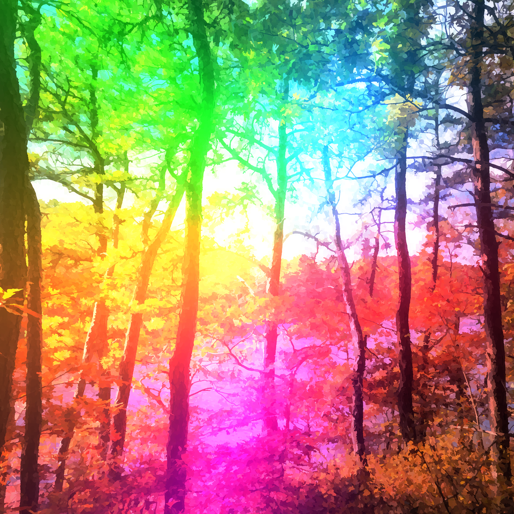

malladus
home page
i would have waited for you
let's meet again in another life
world's edge
cover art
pond5 storefront
airbit storefront
spotify

i would have waited for you
when we knew each other
role reversal
reminds me of her
dream girl
three words
silence
i hope you're watching
still miss you
universe
past tense
outer shell
the beast
last call
what could have been
starry night aura
thorns
unreachable
soliluquoy
i would have waited for you